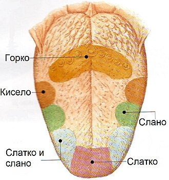

Ukus je jedno od pet čovekovih čula.
Na jeziku u obliku gustatornih kvržica, nalaze se: hemoreceptori, potporne ćelije, bazalne ćelije.
Hemoreceptori sa jedne strane imaju treplje koje su osetljive na hemijske stimulus, a na drugom kraju su u vezi sa senzitivnim nervnim vlaknima, koja odvode nadražaj do mozga.
Za osećaj ukusa zaslužni su takozvani pupoljci, koji se nalaze na jeziku. Ti pupoljci su uronjeni u epitel jezika, a građeni su od potpornih i receptorskih stanica iz kojih izlaze nervna vlakna koja se stapaju u živce, koji dalje vode podražaje u koru velikog mozga.
Na površini jezika, posebno na korenu jezika, nalaze se brojne bradavice, unutar kojih se nalaze pupoljci.
Razlikuju se 4 vrste ukusa:
Sve ove ukuse osećamo preko svih delova jezika. To su četiri osnovne vrste ukusa, ali čovek može razlikovati beskonačno mnogo ukusa, a u tome pomaže i čulo mirisa, koje nadopunjava impulse koji idu prema mozgu.
